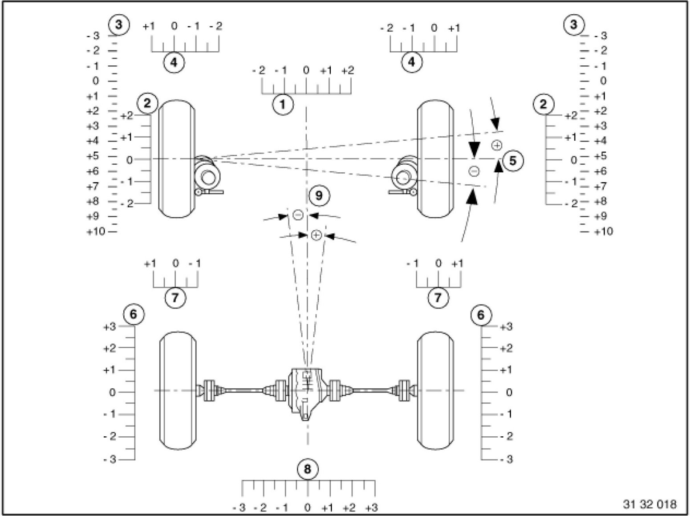
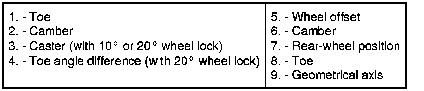

Operation CHARM
: Car repair manuals for everyone.
Home
>>
BMW
>>
2007
>>
X3 3.0si (E83) L6-3.0L (N52K)
>>
Repair and Diagnosis
>>
Steering and Suspension
>>
Description and Operation
>>
General Chassis and Suspension Definitions
General Chassis and Suspension Definitions
32 00 ... - General chassis and
suspension
definitions

